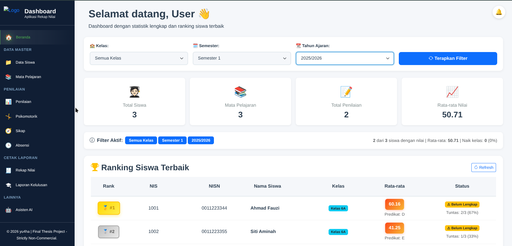

Dashboard beranda — ranking siswa & filter kelas/semester
📊 Aplikasi Rekap Nilai & Kelulusan Siswa + AI ASSISTANT
2025 – Ongoing
Bahasa: TypeScript, Rust | Database: PostgreSQL
- Dashboard web untuk guru: kelola data siswa, mata pelajaran, nilai akademik, nilai psikomotorik, penilaian sikap, dan absensi harian
- Ranking kelas, status tuntas per mapel, kenaikan kelas, dan kelulusan dihitung otomatis
- Cetak laporan rekap nilai dan laporan kelulusan
- Dilengkapi Asisten AI: chatbot yang menjawab berdasarkan data asli di database (bukan menebak) bisa dipakai guru untuk mencari data siswa, nilai per mapel, nilai psikomotorik & sikap, statistik kehadiran, ranking kelas, hingga rekap nilai dan kelulusan lengkap, cukup dengan bertanya dalam bahasa sehari-hari